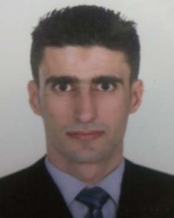
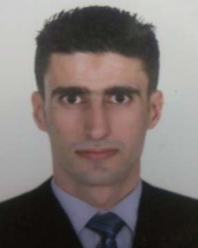

à propos de moi:


Je m'appelle Houssem Gaida et je suis actuellement Chef du Service des Études et des Statistiques. Fort de plus de 7 ans d'expérience dans ce domaine, je supervise également une équipe centrale en tant que Responsable d'Unité Opérationnelle.
Parallèlement, j'exerce en tant que Formateur certifié pour le Programme des Nations Unies pour le Développement (PNUD Tunisie), fonction que j'occupe depuis plus de 3 ans.
Cette double expérience me permet d'allier expertise technique en analyse de données et compétences pédagogiques avancées.
travail:
-
Poste Actuel: Chef du Service des Études et des Statistiques
Ministere x depuis 2023
- Direction d'une équipe de [X] experts en collecte et analyse de données.
- Pilotage d'études stratégiques.
- Développement de tableaux de bord et indicateurs clés pour la prise de décision
- Developpement d'une application nommé Orde du Jour (ODJ)
- Outils de data visualisation (Power BI)
-
Responsabilité Complémentaire: Responsable d'Unité Centrale / Chef d'Équipe Opérationnelle
Ministere x depuis 2019
- Gérer les taches liées au crime.
- Analyse techniques des scènes de crime.
- Développement de tableaux de bord et indicateurs clés pour la prise de décision
- IBM i2 Analyst’s Notebook
-
Expérience de Formation (PNUD Tunisie): Formateur Certifié | Programme des Nations Unies pour le Développement
depuis 2022
- Encadrement de 400 professionnels issus de ministères X.
- Certificat formateur intitulée Conduire une Action de Formation (Centre National de Formation
de Formateurs et d'ingénieurie de Formation-CENAFFIF).
- Certificat formateur intitulée Préparer une Action de Formation (Centre National de Formation
de Formateurs et d'ingénieurie de Formation-CENAFFIF).
-
Poste Actuel: Chef du Service des Études et des Statistiques
Ministere x depuis 2023 - Direction d'une équipe de [X] experts en collecte et analyse de données.
- Pilotage d'études stratégiques.
- Développement de tableaux de bord et indicateurs clés pour la prise de décision
- Developpement d'une application nommé Orde du Jour (ODJ)
- Outils de data visualisation (Power BI)
-
Responsabilité Complémentaire: Responsable d'Unité Centrale / Chef d'Équipe Opérationnelle
Ministere x depuis 2019 - Gérer les taches liées au crime.
- Analyse techniques des scènes de crime.
- Développement de tableaux de bord et indicateurs clés pour la prise de décision
- IBM i2 Analyst’s Notebook
-
Expérience de Formation (PNUD Tunisie): Formateur Certifié | Programme des Nations Unies pour le Développement
depuis 2022 - Encadrement de 400 professionnels issus de ministères X.
- Certificat formateur intitulée Conduire une Action de Formation (Centre National de Formation de Formateurs et d'ingénieurie de Formation-CENAFFIF).
- Certificat formateur intitulée Préparer une Action de Formation (Centre National de Formation de Formateurs et d'ingénieurie de Formation-CENAFFIF).
CV: